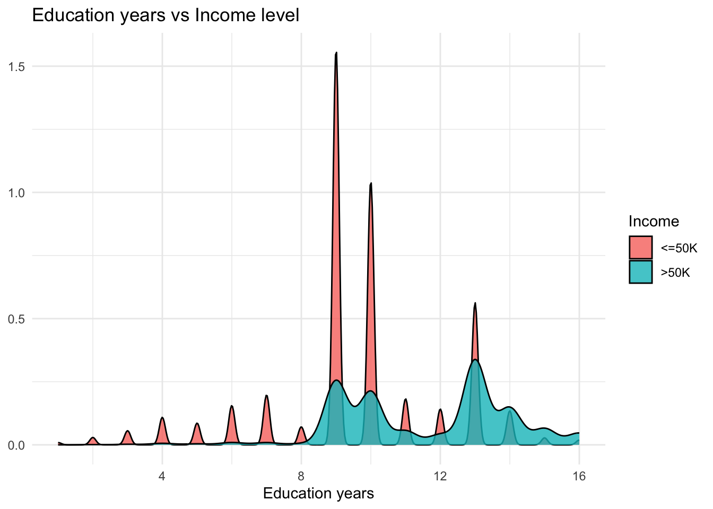
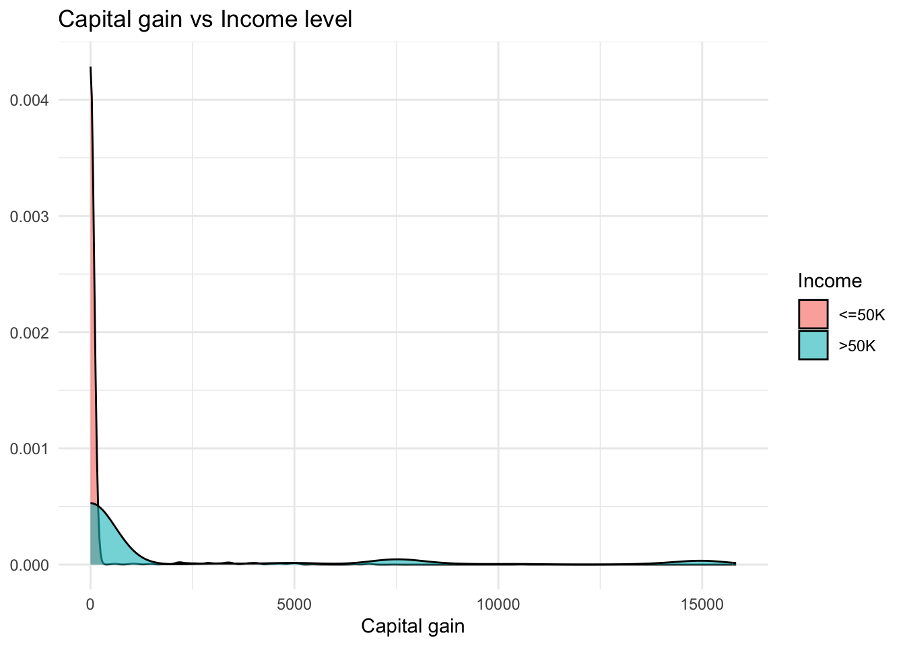
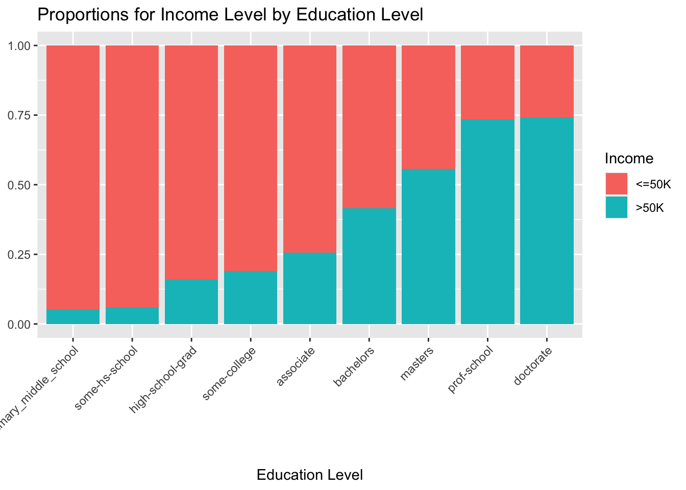

library(tidyverse) #loads packages
library(ggforce)
library(ggridges)
library(readr)
library(readxl)
library(tidymodels)
library(glmnet)Preliminary Analysis: Relationship between Income, Education Level and Capital Gain
Preliminary Analysis
Data and Hypotheses
This research seeks to investigate the relationship between a person’s income and their educational background, and capital gain (the profits that are realized by selling an investment, such as stocks, bonds, or real estate). Our hypothesis is that as the education level and capital gain of a person increases, their income will also increase. Our outcome variable is income and the key explanatory variables are educational level and capital gain. The data we use for this project consists of 51 state samples, 32561 data set instances, and contains 15 attributes, which include a person’s education level, race, capital gain and other relevant information.
Load Packages
Load Data
df <- read_csv("data/adultdata.csv", show_col_types = FALSE) #loads csv fileData Wrangling
colnames(df) <- c("age", "workclass", "fnlwgt", "education", "education_num", "marital_status", "occupation", "relationship", "race", "sex", "capital_gain", "capital_loss", "hours_per_week", "native_country", "income") #rename columnsdf <- df %>%
mutate(education = case_when( #
education %in% c("Preschool", "1st-4th", "5th-6th", "7th-8th") ~ "some_primary_middle_school",
education %in% c("9th", "10th", "11th", "12th") ~ "some-hs-school",
education %in% c("Assoc-acdm", "Assoc-voc") ~ "associate",
education == "HS-grad" ~ "high-school-grad",
education == "Some-college" ~ "some-college",
education == "Bachelors" ~ "bachelors",
education == "Masters" ~ "masters",
education == "Doctorate" ~ "doctorate",
education == "Prof-school" ~ "prof-school"
)
) #recateogrizes education variableedu_fct <- c("some_primary_middle_school", "some-hs-school", "high-school-grad", "some-college","associate", "bachelors", "masters", "prof-school", "doctorate")
df <- df %>%
mutate(education = factor(education, levels = edu_fct)) #creates factor levels for education variabledf <- df %>%
mutate(income_bin = if_else(income==">50K", 1, 0)) #creates a binary income variabledf <- df %>%
mutate(income = factor(income, levels = c("<=50K", ">50K"))) #creates factor for income variableIn-Depth Explanation of Variables
- What data wrangling have you done? Have you changed any of the variables in the original data set?
We have changed the names of the columns so that it is easier to read and do analysis on. We have also mutated the education variable, categorizing the education level into a smaller category so that it is easier to interpret the analysis and graphs. We have also created a factor for education variable in order of the level of education so that we can see clear patterns in graphs during our analysis. Likewise, for our outcome variable, we have created a binary outcome variable income_bin to fit our linear regression model. Also, we have created a factor for the income variable to fit a logistic regression model.
- What data tidying have you had to do?
The data set we used for our analysis is pretty tidied by default. There are a few N/A data in some rows but since it doesn’t interfere much with our analysis, we have ignored those N/A values during our analysis.
- What variables will you include as controls?
We will include marital status, occupation, race, sex and native country as control variables.
- What confounding factors do these help you account for?
These variables help us to account for income changes based on person’s marital status, the kind of work they do, their race, their sex and their country of origin.
After proper data wrangling and setting up control variables, the variables that we’ll be using in our analysis are education, number of years of education and capital gain. education is a categorical ordinal variable which describes the highest level of education achieved by an individual. The categories of this variable are some_primary_middle_school, some-hs-school, high-school-grad, some-college, associate, bachelors, masters, prof-school, and doctorate. Our second variable is num_education, a numerical continuous variable which indicates the highest level of education achieved in numerical form. Our third variable capital_gain is a numerical continuous variable. It indicates the capital gained by a person in a single year. Our final variable, which is also our explanatory variable, is income. We also have a binary variable for income income_bin. It is a categorical ordinal variable which indicates whether the person’s income is higher or lower than $50,000 per year.
Descriptive visualization
df %>%
ggplot(aes(x = education_num, fill = income)) + #maps the plot
geom_density(alpha = 0.8) + #creates density plot
labs(x = "Education years",
y = NULL,
fill = "Income",
title = "Education years vs Income level") +#labels the plot
theme_minimal()
The plot above supports our hypothesis because people who have more years in education usually have a higher level of income. The people who have an income level of over $50k have had an education ranging from 8 to 18 years, with most of them having around 13 years of education. As for low income people, their education level ranges from 0 years to 15 years with most having around 9 years.
df %>%
filter(capital_gain<17000) %>% #filters for outliers
ggplot(aes(x = capital_gain, fill = income)) + #maps the plot
geom_density(alpha = 0.6) + #plots density plot
labs(x = "Capital gain",
y = NULL,
fill = "Income",
title = "Capital gain vs Income level") +#labels the plot
theme_minimal()
We can see from the graph that the capital gain for higher income level is more right skewed as compared to the capital gain for lower income level. This plot supports our hypothesis because we can see that the vast majority of people who have a capital gain amount lower than $500 are also the ones who make less than $50k a year, and those who have a capital gain ranging from $500 all the way up to over $15000 are the ones making over $50k a year.
ggplot(df, aes(x = education,
fill = income)) + #maps axes
geom_bar(position = "fill") +
labs(x = "Education Level", y = NULL, fill = "Income" , title = "Proportions for Income Level by Education Level") +
theme(axis.text.x = element_text(angle = 45, hjust = 1))
This plot also supports our hypothesis because we can see that the proportions of those who make over 50k are higher when a person’s level of education is also higher. To be more specific, those who received a doctorate or professional school degree tend to have the highest proportion of income over 50k, and those who received primary to middle school and some high-school education tend to have the lowest proportion of income over 50k.
Preliminary linear regression models
Fit at most two linear models that help you test your hypotheses (you can include more in the final project and written report). Report the coefficients in a table.
linear_reg() %>% #specifies linear model
set_engine("lm") %>% #lm: linear model
fit(income_bin ~ education, data = df) %>% #fits model and estimates parameters
tidy() #gives tidy output# A tibble: 9 × 5
term estimate std.error statistic p.value
<chr> <dbl> <dbl> <dbl> <dbl>
1 (Intercept) 0.0518 0.0115 4.51 6.62e- 6
2 educationsome-hs-school 0.00782 0.0136 0.577 5.64e- 1
3 educationhigh-school-grad 0.108 0.0121 8.89 6.46e- 19
4 educationsome-college 0.138 0.0124 11.2 6.11e- 29
5 educationassociate 0.204 0.0140 14.5 8.74e- 48
6 educationbachelors 0.363 0.0127 28.6 1.96e-177
7 educationmasters 0.505 0.0150 33.8 1.31e-245
8 educationprof-school 0.683 0.0202 33.9 3.80e-247
9 educationdoctorate 0.689 0.0227 30.4 5.70e-200logistic_reg() %>% #specifies logistic regression model
set_engine("glm") %>% #sets the engine
set_mode("classification") %>% #set the mode
fit(income~capital_gain, data = df) %>% #fits the model
tidy(exponentiate = TRUE)# A tibble: 2 × 5
term estimate std.error statistic p.value
<chr> <dbl> <dbl> <dbl> <dbl>
1 (Intercept) 0.252 0.0143 -96.5 0
2 capital_gain 1.00 0.00000863 38.9 0Preliminary conclusion
The preliminary analysis supports our hypothesis that as the education level and capital gain of a person increases, their income will also increase. To be more specific, our first plot indicates that the number of years of education a person received has a positive relationship with the person’s income level, and our second plot shows that people’s capital gain also tend to correspond to their income level, with those who have less than 500 tend to make less than 50k a year, and those who have more than 500 capital gain tend to make more than 50k a year. The expectations have been met in the preliminary analysis.
From our binary linear regression model, we see that higher the education level is, higher is the probability of the person to fall in higher income group. Likewise, from the logistic regression model, we see that the odds ratio (the ratio of the probability of an event occurring to the event not occurring) of person being in higher income group is significantly higher when the person has a capital gain.
Overall, by using the observations from the three plots and the two regression models, we can say that higher level and more number of years of education and higher capital gain leads to having higher income level and vice versa.